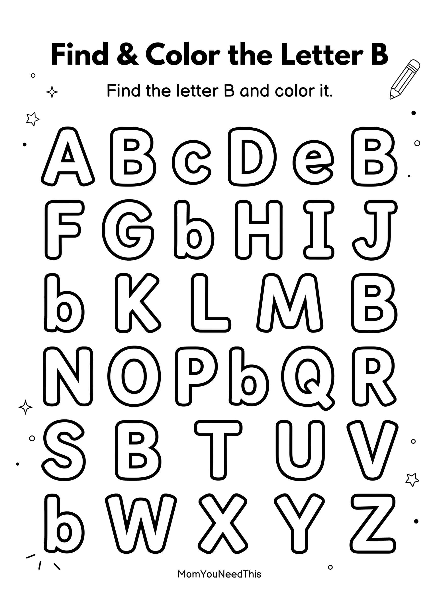

Find & Color Letter B Worksheet
Help your child practice recognizing the letter B with this fun printable Find & Color activity. Children search for uppercase and lowercase B letters while building alphabet recognition, focus, and early literacy skills.

Letter B Find & Color Activity
Find every uppercase and lowercase B, then color the letters to practice recognition and visual discrimination.
⬇️ Download Worksheet
What Children Practice
⭐ Explore More Find & Color Letters
Continue practicing alphabet recognition with more Find & Color worksheets, matching activities, tracing pages, and alphabet coloring pages.
🔍 More Find & Color LettersMore Free Learning Resources
Discover printable alphabet activities, preschool worksheets, coloring pages, tracing pages, math activities, and more free educational resources.
🎁 View All Free Resources🖨️ How to Use This Printable
Get started in minutes — everything here is free and made for busy parents.
- Download the printable. Tap the download button to save the free Find & Color Letter B file to your device.
- Print it out. Use any home printer and regular paper — cardstock works great for pages little hands will use again and again.
- Learn together. Sit with your child, follow the activity, and keep it playful. Short sessions work best.
- Explore more. Check the free printables linked below for your next activity.
❓ Find & Color Letter B FAQs
Is this Find & Color Letter B printable free?
Yes — every printable on MomYouNeedThis is 100% free to download and print. No signup, no payment, just tap the download button.
How do I use this alphabet printable?
Print the page and work through it together: name the letter, make its sound, and complete the activity. Short, playful sessions work better than long lessons for little learners.
What literacy skills does this practice?
Letter recognition, beginning sounds, and print awareness — the core pre-reading skills that prepare children for phonics and reading.
🔗 More Free Printables You’ll Love
Pair this printable with more free learning activities from the MomYouNeedThis library.
- 🔤 Alphabet Coloring PagesFree A to Z alphabet coloring printables for toddlers and preschoolers.
- 🎏 Free Alphabet Tracing PagesFree alphabet tracing pages printable for toddlers and preschoolers.
- 🎏 Free Beginning Sounds PagesFree beginning sounds pages printable for toddlers and preschoolers.
- 🎏 Free Dot Marker Alphabet WorksheetsFree dot marker alphabet worksheets printable for toddlers and preschoolers.